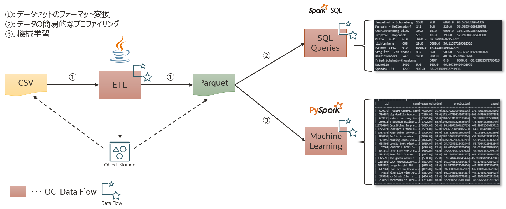
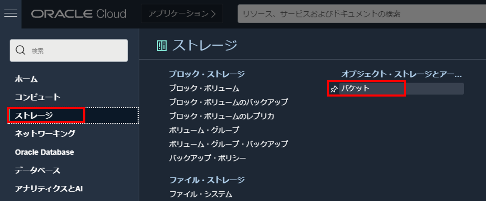
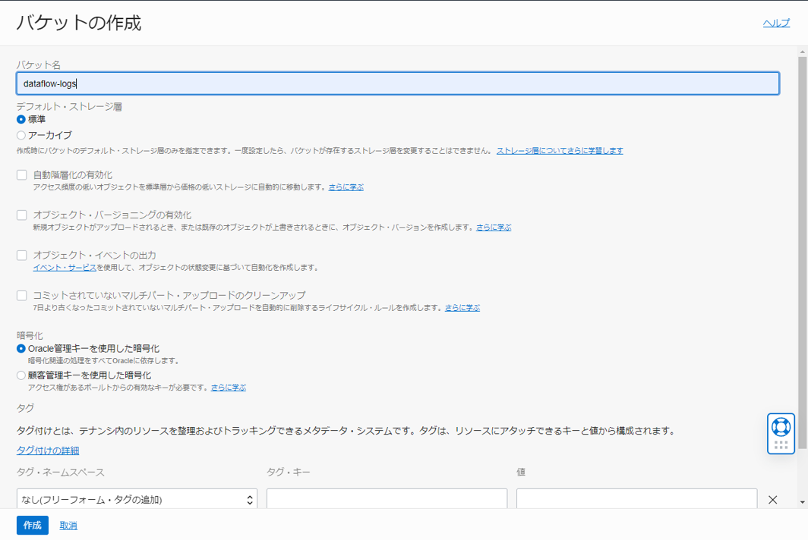
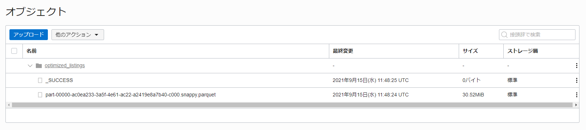
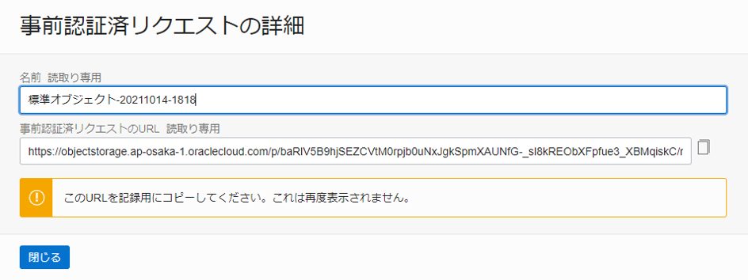
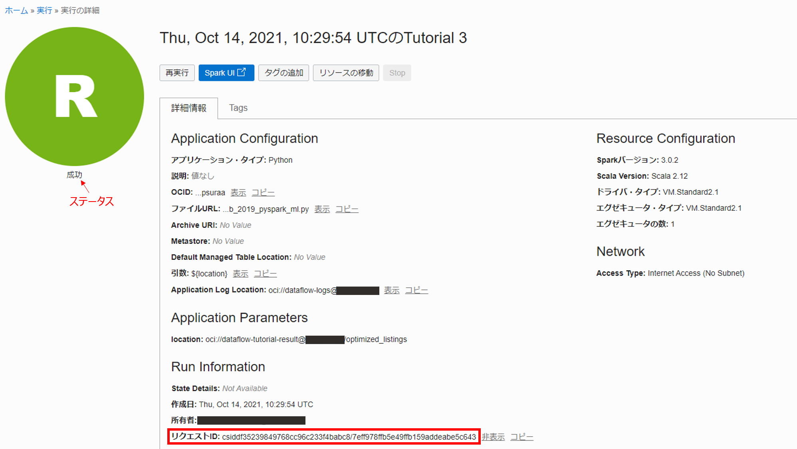
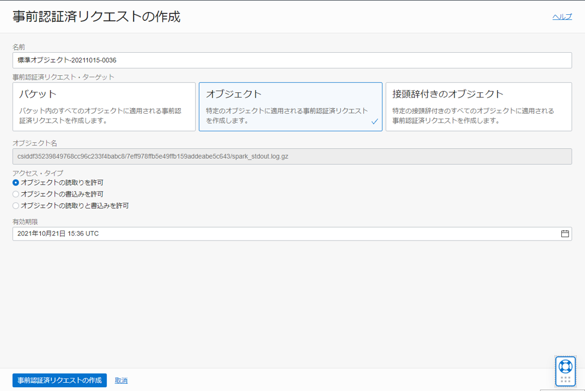

OCI Data Flow は、大量データの並列分散処理を実現するためのフレームワークである Apache Spark を OCI 上でマネージドサービスとして提供します。 このエントリーでは、OCI Data Flow の基本的な操作を学習します。
前提条件
- クラウド環境
- Oracle Cloud のアカウントを取得済みであること
ハンズオンの全体像
本ハンズオンは、Berlin Airbnb データセットを用いて最適な取引物件を予測する事を行いたいと思います。そのために OCI Data Flow を用いて、以下のことを学習します。
- Java を使用した ETL
- SparkSQL によるデータの簡易的なプロファイリング
- PySpark を使用した機械学習

それでは、実施していきます。
0. 事前準備
OCI Data Flow を使用するための Object Storage の作成やポリシーの設定を行います。また、Data Flow は Object Storage へのアクセスに Hadoop Distributed File System(HDFS) コネクタ を使用してアクセスしますが、その際の URL は以下の形式に従う必要があります。
oci://<バケット名>@<ネームスペース>/<オブジェクト名>
ネームスペースは、OCI 全体でテナント毎に一意に割り振られており、コンソール画面右上の人型アイコンからテナンシ: xxxxxxx を押して確認します。

テナンシ詳細画面のテナンシ情報タブでネームスペースを確認することができます。(通常は、nrlhux6vphsp のようなランダムな文字列です)

確認したネームスペースは以降で使用するためメモ帳などに控えておいてください。
0-1. Object Storage の作成
Data Flow でアプリケーションを実行する前に、以下の 2 つのバケットを作成しておく必要があります。
- dataflow-logs: Data Flow がアプリケーションの実行毎にログ(標準出力と標準エラー出力の両方)を格納するためのバケット
- dataflow-warehouse: SparkSQL アプリケーションのデータウェアハウス用のバケット
また、それとは別に本ハンズオン用に
- dataflow-tutorial-result: ETL 処理で変換したファイルを格納するためのバケット
を作成します。
0-1-1. dataflow-logs の作成
コンソール左上のハンバーガーメニューからストレージ > バケットと選択します。

バケットの作成を押し、以下のように入力してバケットを作成します。
- バケット名: dataflow-logs
- デフォルト・ストレージ層: 標準
- 暗号化: Oracle 管理キーを使用した暗号化

0-1-2. dataflow-warehouse の作成
バケットの作成を押し、以下のように入力してバケットを作成します。
- バケット名: dataflow-warehouse
- デフォルト・ストレージ層: 標準
- 暗号化: Oracle 管理キーを使用した暗号化

0-1-3. dataflow-tutorial-result の作成
バケットの作成を押し、以下のように入力してバケットを作成します。
- バケット名: dataflow-tutorial-result
- デフォルト・ストレージ層: 標準
- 暗号化: Oracle 管理キーを使用した暗号化

0-1-1. dataflow-logs の作成 ~ 0-1-3. dataflow-tutorial-result の作成が完了した段階で以下のようになっていれば当ハンズオンにおける Object Storage のセットアップは完了です。

0-2. ポリシーの設定
Data Flow でアプリケーションを管理・実行するためにいくつかのポリシーを設定する必要があります。 手動での作成方法とポリシー・テンプレートを使用した作成方法と 2 通り存在しますが、本ハンズオンではポリシー・テンプレートを使用した作成方法で作成します。
はじめに、OCI コンソール画面左上のハンバーガーメニューを展開し、アイデンティティとセキュリティ > ポリシーと選択します。

ポリシーの作成を押し、以下のように入力し Data Flow 用のポリシーを作成します。
- 名前: data_flow_policy
- コンパートメント: 任意のコンパートメントを指定
- ポリシーユースケース: データ・フロー
- 共通ポリシー・テンプレート: データ・フロー管理者がすべてのアプリケーションと実行を管理
- グループ: Data Flow を実行するユーザーが含まれているグループ
- 場所: Data Flow 関連のリソース(Data Flow, Object Storage etc.)が配置されるコンパートメント

これによって、以下のポリシーが生成されることになります。
Allow group <your-group> to read buckets in compartment <your-compartment>
Allow group <your-group> to manage dataflow-family in compartment <your-compartment>
Allow group <your-group> to manage objects in compartment <your-compartment> where ALL {target.bucket.name='dataflow-logs', any {request.permission='OBJECT_CREATE', request.permission='OBJECT_INSPECT'}}
1. Java を使用した ETL
本ハンズオンでは、Creative Commons CC0 1.0 Universal (CC0 1.0)の「Public Domain Dedication」ライセンスに基づいて Kaggle Web サイトからダウンロードされた Berlin Airbnb データセットのうち、一部(listings_summary.csv)を使用します。拡張子を見れば分かると思いますが、データは CSV フォーマットで提供されます。最初のステップでは、このデータを Parquet1に変換し、以降の処理のために Object Storage(dataflow-tutorial-result) に変換後のファイルを格納することを行いたいと思います。
1-1. Data Flow のアプリケーションを作成する
OCI コンソール画面左上のハンバーガーメニューを展開し、アナリティクスと AI > データ・フローと選択します。

Create Applicationを押し、以下のように入力して Spark アプリケーションを作成します。
- 一般情報
- 名前: Tutorial 1
- Spark バージョン: Spark 3.0.2 -> Scala 2.12
- ドライバ・タイプ: VM.Standard2.1 (15 GB Memory, 1 OCPU, 175 GB Block Volume)
- エグゼキュータ・タイプ: VM.Standard2.1 (15 GB Memory, 1 OCPU, 175 GB Block Volume)
- エグゼキュータの数: 1

アプリケーション構成までスクロールし、以下のように入力します。
- アプリケーション構成
- 言語: Java
- Enter the file URL manually にチェックを入れる
- ファイル URL:
oci://oow_2019_dataflow_lab@bigdatadatasciencelarge/usercontent/oow-lab-2019-java-etl-1.0-SNAPSHOT.jar - メイン・クラス名: convert.Convert
- 引数:
${input} ${output} - Application Log Location: oci://dataflow-logs@<namespace>
※<namespace>は、0. 事前準備で確認した物を入力してください。


作成を押し、Spark アプリケーションを作成します。
1-2. Java アプリケーションを実行する
作成したアプリケーションの詳細画面から実行ボタンを押し、以下のように実行時引数を入力し、実行します。
input:
oci://oow_2019_dataflow_lab@bigdatadatasciencelarge/usercontent/kaggle_berlin_airbnb_listings_summary.csv
output:
oci://dataflow-tutorial-result@<namespace>/optimized_listings
※<namespace>は、0. 事前準備で確認した物を入力してください。

実行すると、実行画面でステータスが受け入れ済みなアプリケーションを確認することができます。

1-3. Spark UI で進行状況をモニターする
ステータスが進行中もしくは成功である実行の詳細画面から Spark UI のボタンを押すと、Spark UI をロードし、進行状況をモニターすることができます。

ステータスが成功となると、Spark UI から処理にかかった時間などを確認することができます。


最後に結果を格納するための Object Storage(dataflow-tutorial-result) に Parquet ファイルが格納されていることを確認します。

これで、Java を使用した ETL は完了です。
1-4. (参考) ETL 処理をしている Java アプリケーションについて
1-1 ~ 1-3 までに使用した JAR ファイルはこちらで公開されています。
実行されているアプリケーションのコードは以下のようになっています。
package convert;
import org.apache.spark.sql.Dataset;
import org.apache.spark.sql.Row;
import org.apache.spark.sql.SparkSession;
import org.apache.spark.sql.types.StructType;
public class Convert {
public Convert() {
}
public static void convert(SparkSession spark, String input, String output) {
StructType schema = (new StructType())
.add("id", "long").add("listing_url", "string").add("scrape_id", "string").add("last_scraped", "string").add("name", "string").add("summary", "string").add("space", "string").add("description", "string").add("experiences_offered", "string").add("neighborhood_overview", "string").add("notes", "string").add("transit", "string").add("access", "string").add("interaction", "string").add("house_rules", "string").add("thumbnail_url", "string").add("medium_url", "string").add("picture_url", "string").add("xl_picture_url", "string").add("host_id", "string").add("host_url", "string").add("host_name", "string").add("host_since", "string").add("host_location", "string").add("host_about", "string").add("host_response_time", "string").add("host_response_rate", "string").add("host_acceptance_rate", "string").add("host_is_superhost", "string")
.add("host_thumbnail_url", "string").add("host_picture_url", "string").add("host_neighborhood", "string").add("host_listings_count", "string").add("host_total_listings_count", "string").add("host_verifications", "string").add("host_has_profile_pic", "string").add("host_identity_verified", "string").add("street", "string").add("neighborhood", "string").add("neighborhood_cleansed", "string").add("neighborhood_group_cleansed", "string").add("city", "string").add("state", "string").add("zipcode", "string").add("market", "string").add("smart_location", "string").add("country_code", "string").add("country", "string").add("latitude", "string").add("longitude", "string").add("is_location_exact", "string")
.add("property_type", "string").add("room_type", "string").add("accommostrings", "string").add("bathrooms", "string").add("bedrooms", "string").add("beds", "string").add("bed_type", "string").add("amenities", "string").add("square_feet", "float").add("price", "float").add("weekly_price", "float").add("monthly_price", "float").add("security_deposit", "float").add("cleaning_fee", "float").add("guests_included", "string").add("extra_people", "string").add("minimum_nights", "string").add("maximum_nights", "string").add("calendar_upstringd", "string").add("has_availability", "string").add("availability_30", "string").add("availability_60", "string").add("availability_90", "string").add("availability_365", "string")
.add("calendar_last_scraped", "string").add("number_of_reviews", "string").add("first_review", "string").add("last_review", "string").add("review_scores_rating", "int").add("review_scores_accuracy", "int").add("review_scores_cleanliness", "int").add("review_scores_checkin", "int").add("review_scores_communication", "int").add("review_scores_location", "int").add("review_scores_value", "int").add("requires_license", "string").add("license", "string").add("jurisdiction_names", "string").add("instant_bookable", "string").add("is_business_travel_ready", "string").add("cancellation_policy", "string").add("require_guest_profile_picture", "string").add("require_guest_phone_verification", "string").add("calculated_host_listings_count", "string").add("reviews_per_month", "string"); // ... 3
Dataset<Row> df = spark.read().option("header", "true").option("multiLine", "true").option("escape", "\"").schema(schema).csv(input); // ... 4
df.toDF().write().parquet(output); // ... 5
}
public static void main(String[] args) { // ... 1
SparkSession spark = SparkSession.builder().appName("oow-lab").getOrCreate();
convert(spark, args[0], args[1]); // ...2
System.out.println("Conversion was successful");
spark.stop();
}
}
簡単に補足すると、
- Spark アプリケーションのエントリーポイント
- CSV → Parquet への変換処理
- CSV の形式を定義
- Object Storage 上の CSV ファイルを読み込む
- Dataset(CSV)を Parquet へ変換し、指定のバケットに Parquet ファイルを格納する
と、いうことが行われています。参考までに。
2. SparkSQL によるデータの簡易的なプロファイリング
次に、1. Java を使用した ETLで生成したデータセットに対して基本的なプロファイリングを実施します。それでは、早速アプリケーションを作成していきます。
2-1. SQL アプリケーションを作成する
OCI コンソール画面左上のハンバーガーメニューを展開し、アナリティクスと AI > データ・フローと選択します。Create Applicationを押し、以下のように入力して Spark アプリケーションを作成します。
- 一般情報
- 名前: Tutorial 2
- Spark バージョン: Spark 3.0.2 -> Scala 2.12
- ドライバ・タイプ: VM.Standard2.1 (15 GB Memory, 1 OCPU, 175 GB Block Volume)
- エグゼキュータ・タイプ: VM.Standard2.1 (15 GB Memory, 1 OCPU, 175 GB Block Volume)
- エグゼキュータの数: 1

アプリケーション構成までスクロールし、以下のように入力します。
- アプリケーション構成
- 言語: SQL
- Enter the file URL manually にチェックを入れる
- ファイル URL:
oci://oow_2019_dataflow_lab@bigdatadatasciencelarge/usercontent/oow_lab_2019_sparksql_report.sql - パラメータ・オプション
- 名前: location
- 値: oci://dataflow-tutorial-result@<namespace>/optimized_listings
- Application Log Location: oci://dataflow-logs@<namespace>
※<namespace>は、0. 事前準備で確認した物を入力してください。

2-2. SQL アプリケーションを実行する
作成したアプリケーションの詳細画面から実行ボタンを押し、SQL アプリケーションを実行します。

実行の完了後、ステータスが成功となっていることを確認し、Application Configuration 内の Run Information のリクエスト ID をコピーし、メモ帳などに控えておきます。

Object Storage のdataflow-logsというバケット内のリクエスト ID 紐づいたオブジェクトに標準出力と標準エラー出力が格納されているので、標準出力 (spark-stdout.log.gz) の方をダウンロードします。

ダウンロードしたファイルを、7-Zip等を用いて解凍し、中に含まれているログファイルをメモ帳などを用いて開き、以下の内容と一致していれば、2. SparkSQL によるデータの簡易的なプロファイリングは完了です！

また、自分の PC に解凍ツールが含まれていない場合は、Cloud Shell を用いて以下の手順でも内容の確認が可能です。まずは、spark-stdout.log.gz の事前認証済みリクエストを作成します。

以下のように選択して、事前認証済みリクエストを作成します。

発行された事前認証済みリクエスト URL をメモ帳などにコピーしておきます。(再度表示されないため、誤って閉じてしまった場合は再度事前認証済みリクエストを発行してください)

次に Cloud Shell を開きます。

事前承認リクエストで発行された URL からログをホームディレクトリなどにダウンロードします。(以下は期限付きの URL のため実行してもログファイルを得ることはできません)
wget https://objectstorage.ap-osaka-1.oraclecloud.com/p/baRlV5B9hjSEZCVtM0rpjb0uNxJgkSpmXAUNfG-_sl8kREObXFpfue3_XBMqiskC/n/orasejapan/b/dataflow-logs/o/csidfc9183834e8d9053326a4f6fa44a/66140cd828f842e8b92ab857347662d6/spark_stdout.log.gz
解凍します。
gzip -d spark_stdout.log.gz
中身を確認します。
less spark_stdout.log.gz
以下と内容が一致していることを確認します。
Tempelhof - Schoneberg 1560 0.0 6000.0 96.5724358974359
Marzahn - Hellersdorf 141 0.0 220.0 56.50354609929078
Charlottenburg-Wilm. 1592 10.0 9000.0 114.27072864321607
Treptow - Kopenick 595 10.0 390.0 52.21680672268908
Mitte 4631 0.0 3000.0 69.69941697257612
Lichtenberg 688 10.0 5000.0 56.11337209302326
Pankow 3541 0.0 5000.0 67.82264896921774
Steglitz - Zehlendorf 437 8.0 500.0 56.327231121281464
Reinickendorf 247 10.0 880.0 48.26315789473684
Friedrichshain-Kreuzberg 5497 0.0 8600.0 60.82881571766418
Neukolln 3499 9.0 500.0 46.56730494426979
Spandau 124 12.0 400.0 58.233870967741936
2-3. (参考) 実行された SparkSQL について
2-1 ~ 2-2 までに使用した SQL ファイルはこちらで公開されているため、詳細はこちらから確認してください。
実際に実行された SQL は以下のようになっています。
drop table if exists listings;
create external table listings(
id bigint, listing_url string, scrape_id string,
last_scraped string, name string, summary string,
space string, description string, experiences_offered string,
neighborhood_overview string, notes string, transit string,
access string, interaction string, house_rules string,
thumbnail_url string, medium_url string, picture_url string,
xl_picture_url string, host_id string, host_url string,
host_name string, host_since string, host_location string,
host_about string, host_response_time string, host_response_rate string,
host_acceptance_rate string, host_is_superhost string, host_thumbnail_url string,
host_picture_url string, host_neighborhood string, host_listings_count string,
host_total_listings_count string, host_verifications string, host_has_profile_pic string,
host_identity_verified string, street string, neighborhood string,
neighborhood_cleansed string, neighborhood_group_cleansed string, city string,
state string, zipcode string, market string,
smart_location string, country_code string, country string,
latitude string, longitude string, is_location_exact string,
property_type string, room_type string, accommodates string,
bathrooms string, bedrooms string, beds string,
bed_type string, amenities string, square_feet float,
price float, weekly_price float, monthly_price float,
security_deposit float, cleaning_fee float, guests_included string,
extra_people string, minimum_nights string, maximum_nights string,
calendar_updated string, has_availability string, availability_30 string,
availability_60 string, availability_90 string, availability_365 string,
calendar_last_scraped string, number_of_reviews string, first_review string,
last_review string, review_scores_rating int, review_scores_accuracy int,
review_scores_cleanliness int, review_scores_checkin int, review_scores_communication int,
review_scores_location int, review_scores_value int, requires_license string,
license string, jurisdiction_names string, instant_bookable string,
is_business_travel_ready string, cancellation_policy string, require_guest_profile_picture string,
require_guest_phone_verification string, calculated_host_listings_count string, reviews_per_month string
) stored as parquet location '${location}'; -- ... 1
-- Do.
select -- ... 2
neighborhood_group_cleansed,
count(*) total,
min(price) min_price,
max(price) max_price,
avg(price) avg_price
from listings
group by neighborhood_group_cleansed;
- 1. Java を使用した ETLの出力(Parquet)を用いて、テーブルの定義2をしています
- 作成したテーブルに対して、ある地域毎(
neighborhood_group_cleansed)にグループ化し、宿泊施設の数、最小／最大価格や平均価格を参照しています
3. PySpark を使用した機械学習
1. Java を使用した ETLの出力(Parquet)を用いて、簡易的な機械学習を実施します。それでは、早速アプリケーションを作成していきます。
3-1. PySpark アプリケーションを作成する
OCI コンソール画面左上のハンバーガーメニューを展開し、アナリティクスと AI > データ・フローと選択します。Create Applicationを押し、以下のように入力して Spark アプリケーションを作成します。
- 一般情報
- 名前: Tutorial 3
- Spark バージョン: Spark 3.0.2 -> Scala 2.12
- ドライバ・タイプ: VM.Standard2.1 (15 GB Memory, 1 OCPU, 175 GB Block Volume)
- エグゼキュータ・タイプ: VM.Standard2.1 (15 GB Memory, 1 OCPU, 175 GB Block Volume)
- エグゼキュータの数: 1

アプリケーション構成までスクロールし、以下のように入力します。
- アプリケーション構成
- 言語: SQL
- Enter the file URL manually にチェックを入れる
- ファイル URL:
oci://oow_2019_dataflow_lab@bigdatadatasciencelarge/usercontent/oow_lab_2019_pyspark_ml.py - 引数: ${location}
- デフォルト値: oci://dataflow-tutorials@<namespace>/optimized_listings
- Application Log Location: oci://dataflow-logs@<namespace>
※<namespace>は、0. 事前準備で確認した物を入力してください。

3-2. PySpark アプリケーションを実行する
作成したアプリケーションの詳細画面から実行ボタンを押し、PySpark アプリケーションを実行します。

実行の完了後、ステータスが成功となっていることを確認し、Application Configuration 内の Run Information のリクエスト ID をコピーし、メモ帳などに控えておきます。

Object Storage の dataflow-logs というバケット内のリクエスト ID 紐づいたオブジェクトに標準出力と標準エラー出力が格納されているので、標準出力 (spark-stdout.log.gz) の方をダウンロードします。

ダウンロードしたファイルを、7-Zip 等を用いて解凍し、中に含まれているログファイルをメモ帳などを用いて開き、以下の内容と一致していれば、3. PySpark を使用した機械学習は完了です！

この結果から、面積が 4639 平方フィートで定価$35.00 に比べて、予測価格$313.70 のリスト ID: 690578 が最適な取引であることが確認できます。
また、自分の PC に解凍ツールが含まれていない場合は、Cloud Shell を用いて以下の手順でも内容の確認が可能です。まずは、spark-stdout.log.gz の事前認証済みリクエストを作成します。

以下のように選択して、事前認証済みリクエストを作成します。

発行された事前認証済みリクエスト URL をメモ帳などにコピーしておきます。(再度表示されないため、誤って閉じてしまった場合は再度事前認証済みリクエストを発行してください)

次に Cloud Shell を開きます。
事前承認リクエストで発行された URL からログをホームディレクトリなどにダウンロードします。(以下は期限付きの URL のため実行してもログファイルを得ることはできません)
wget https://objectstorage.ap-osaka-1.oraclecloud.com/p/pE6Lxy4t5IoWp4V9vvqclympB4mIe_PfQQzD4mDGBz0MNeHp41WtEMoA6dluKZHU/n/orasejapan/b/dataflow-logs/o/csiddf35239849768cc96c233f4babc8/7eff978ffb5e49ffb159addeabe5c643/spark_stdout.log.gz
解凍します。(ファイル上書きの警告が出た場合は、そのまま y と入力します)
gzip -d spark_stdout.log.gz
中身を確認します。(Cloud Shell を用いてファイルの中身を確認した場合は、ファイルの先頭に null 文字(^@)が表示されることがあります)
less spark_stdout.log.gz
以下と内容が一致していることを確認します。
| id| name|features|price| prediction| value|
+--------+--------------------+--------+-----+------------------+-------------------+
| 690578| Quiet Central Cosy|[4639.0]| 35.0|313.70263597898196|-278.70263597898196|
| 789554|big familia house...|[2260.0]| 70.0|172.44759624397358|-102.44759624397358|
| 669330|modern and cosy 4...|[1722.0]| 50.0|140.50341323538404| -90.50341323538404|
| 230611|4 bedroom holiday...|[1722.0]| 65.0|140.50341323538404| -75.50341323538404|
|28706284|Catsitting in pre...|[1023.0]| 30.0| 98.99972564615713| -68.99972564615713|
| 1275721|Sonniger Altbau B...|[1539.0]| 65.0|129.63764094807573| -64.63764094807573|
| 1353286|Huge quiet conven...|[1399.0]| 60.0| 121.3250282692606| -61.3250282692606|
3-3. (参考) 実行された Python のスクリプトについて
3-1 ~ 3-2 までに使用した Python ファイルはこちらで公開されているため、詳細はこちらから確認してください。
実際に実行された Python スクリプトは以下のようになっています。
#------------------------------------------------------------------------------
# Copyright (c) 2020, Oracle and/or its affiliates. All rights reserved.
#------------------------------------------------------------------------------
from __future__ import print_function
import sys
from pyspark import SparkConf
from pyspark.ml.feature import VectorAssembler
from pyspark.ml.regression import LinearRegression
from pyspark.sql import SQLContext, SparkSession
def main():
spark = SparkSession.builder.appName("dataflow").getOrCreate()
sql_context = SQLContext(spark)
# Prep the data.
# We eliminate nulls and zero values as they would skew the model.
listings_df = sql_context.read.format('parquet').load(sys.argv[1]) # ... 1
listings_df.createGlobalTempView("listings") # ... 2
clean_df = sql_context.sql("select id, name, square_feet, price from global_temp.listings where square_feet > 0 and price > 0") # ... 3
# Prepare the data to feed into the model.
assembler = VectorAssembler(inputCols = ['square_feet'], outputCol = 'features') # ... 4
assembled = assembler.transform(clean_df)
df = assembled.select(['id', 'name', 'features', 'price'])
# Train the model.
lr = LinearRegression(featuresCol = 'features', labelCol='price') # ... 5
model = lr.fit(df)
# Make predictions.
predictions = model.transform(df) # ... 6
# Sort by the gap between prediction and price.
predictions.createGlobalTempView("predictions")
values = sql_context.sql('select *, price - prediction as value from global_temp.predictions order by price - prediction') # ... 7
values.show()
if __name__ == '__main__':
main()
- 1. Java を使用した ETLの出力(Parquet)を読み込んでいます
- Spark アプリケーションが終了するまで保持するテンポラリー・ビューを作成します
- 不要なデータを除外しています(ここでは、
square_feet > 0かつprice > 0のデータのみを対象としています) square_feetをベクトル化し、features列に格納しています- 線形回帰(LinearRegression)を使ってモデルを学習させます
- 学習したモデルを用いて予測価格を作成しています
- テンポラリー・ビューに対して、SQL を発行しています(price - prediction の差が最も大きい順にソートしています)
4. まとめ
いかがでしたでしょうか。自分で Spark を構築して一連のことを行うよりも簡単に実行できることが確認できたと思います。